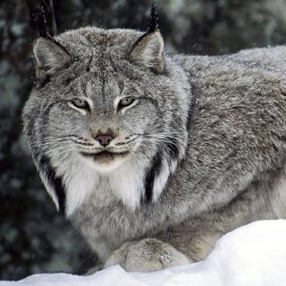

Lynx

Lynxes are medium-sized wild cats known for their tufted ears, distinctive markings, and solitary behavior.
Physical Characteristics
- Size: Lynxes vary in size, with the Eurasian lynx being larger than the Canada lynx.
- Tufted Ears: They have tufts of hair on their ears, which adds to their unique appearance.
- Markings: Lynxes typically have spotted or striped coats that provide camouflage in their natural habitats.
Behavior and Habitat
- Habitat: Lynxes are found in various habitats including forests, mountains, and tundra in North America, Europe, and Asia.
- Solitary Lifestyle: They are generally solitary animals, with males and females coming together only during the mating season.
- Hunting Skills: Lynxes are skilled hunters, primarily preying on small mammals like rabbits and rodents.
Diet
Lynxes are carnivores and have a diet consisting mainly of small mammals, birds, and occasionally larger prey.
Conservation Status
Some lynx populations are stable, while others are threatened due to habitat loss and human activities.
Interesting Facts
- Adaptations: Lynxes have excellent eyesight and hearing, which are essential for locating and hunting prey.
- Winter Coat: In cold climates, lynxes grow a thicker coat in winter to help them withstand colder temperatures.
- Cultural Significance: Lynxes have been featured in folklore and cultural stories in various societies.